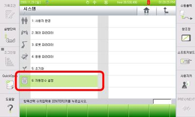
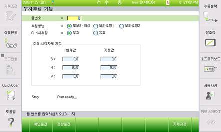
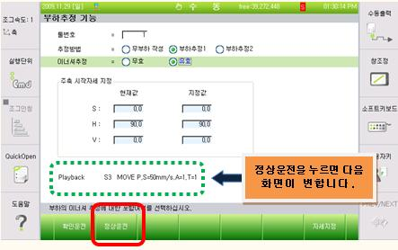
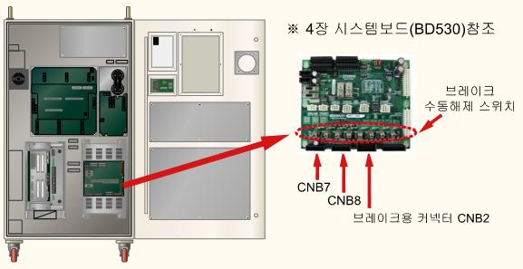
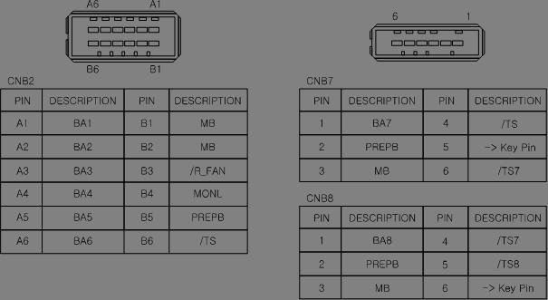
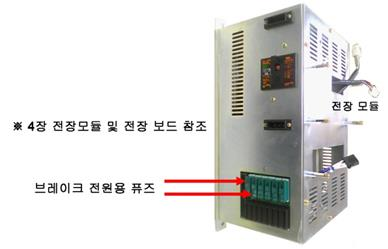
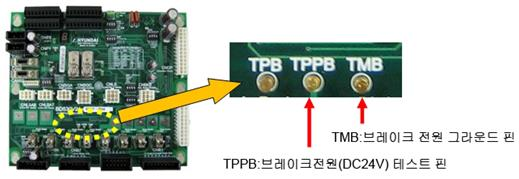
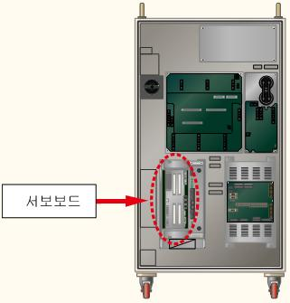
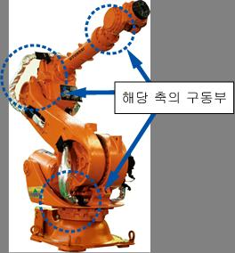

1.1.16.1. 개요
모터 또는 구동장치가 무리하게 동작되고 있습니다. 모터 또는 구동장치가 설정치 보다 무리하게 동작하게 되면, 서보보드는 에러를 감지하고 로봇을 정지시킵니다.
1.1.16.2. 원인 및 점검방법
|
(1) 부하가 로봇의 정격 이하로 설치되어 있는지 확인하십시오.
(2) 로봇 동작 중 충돌요소가 있는지 점검하십시오.
(3) 축 브레이크가 정상적으로 작동하는지 확인하십시오.
(4) 서보보드를 교체하여 이상여부를 점검하십시오.
(5) 구동부가 정상적으로 작동하는지 점검하십시오. |
(1) 부하가 로봇의 정격 이하로 설치되어 있는지 확인하십시오.
로봇 최대 사양 이하의 부하가 설치되어 있는지 확인하십시오. 사양을 초과할 경우 에러가 발생할 수 있습니다. (여기서 부하란, 로봇 끝단에 설치되는 툴뿐만 아니라 로봇 기구에 부착되는 케이블 및 다른 모든 부분이 포함됩니다.)
부하를 확인하는 방법에는 계측기를 사용하는 방법이 가장 정확하지만 여의치 않을 경우에는 제어기 기능 중 부하추정 기능을 사용하여 확인할 수 있습니다. 부하추정 기능은 로봇 끝단에 설치되어 있는 툴에 대한 부분만 추정 가능합니다.
부하 추정 방법은 다음과 같습니다.
n 부하추정 기능으로 들어갑니다.
『[F2]: 시스템』 → 『6: 자동정수 설정』 → 『4: 부하추정 기능』


n 부하추정 기능에서 툴 번호, 추정방법 및 이너셔 추정여부를 선택합니다.

Ø 부하추정 후 저장할 툴 번호
Ø 추정 방법: 부하추정 2
Ø 이너셔 추정: 유효

n 정상 운전을 클릭하여 수행합니다.
모터 On 스위치를 누르고 데드맨을 잡은 후 정상운전을 클릭합니다.

부하 추정 결과를 등록할지 결정합니다.
n 부하 추정 운전이 완료되면 추정 결과가 화면에 보여집니다.

여기서 종료 버튼을 누르면 결과를 반영할 것인지 확인 창이 나타나고 ‘예’를 누르면 저장이 됩니다.
(2) 로봇 동작 중 충돌요소가 있는지 점검하십시오.
로봇 작업 영역에 로봇과 간섭 또는 충돌하는 부분이 있는지 확인하십시오. 로봇이 다른 기구물과 간섭이 발생할 경우 에러가 발생할 수 있습니다. 이 경우, 작업 프로그램을 수정하여 간섭이 발생하지 않도록 합니다.
(3) 축 브레이크가 정상적으로 작동하는지 확인하십시오.
해당 축 브레이크의 해제기능에 문제가 있거나 브레이크 해제전압의 이상일 수 있습니다.
n 개별 축 브레이크 해제 이상 점검
모터전원을 제거한 후(모터OFF) 브레이크 수동스위치를 사용하여 해당 축의 브레이크가 해제되는지 확인하십시오. 브레이크 해제시 모터에서 나는 소리로 확인할 수 있습니다.

그림 1.75 브레이크 수동해제 스위치의 위치
해당 축의 브레이크가 해제되지 않는다면 시스템보드의 브레이크 해제전압 출력상태를 확인해야 합니다. 브레이크 배선(CNB2, CNB7, CNB8 커넥터)을 제거하고 수동브레이크 스위치를 사용하여 브레이크전압을 출력하십시오. CNB2 또는 CNB7, CNB8커넥터에서 해당 축의 브레이크 전압이 20V이상으로 출력되는지 측정하십시오. 20V이하의 전압으로 출력되는 축이 있다면 시스템보드(BD530)의 고장이므로 교체하십시오.

그림 1.76 CNB2, CNB7 커넥터의 핀배치
n 브레이크용 전원이상 점검.
“E0012 브레이크 전원이상”이라는 메시지가 같이 발생하였다면 브레이크 전원장치에 이상이 있는 것입니다. TP에서 “『[F1]: 서비스』 → 『1: 모니터링』 → 『2: 입출력 신호』 → 『1: 전용 입력신호』” 창을 열어보면 “과부하(Brake전원)” 항목이 있습니다. 이것이 노란색으로 표시되어 있다면 전장모듈의 브레이크 전원용 퓨즈가 끊어진 것입니다. 해당 퓨즈를 교체하십시오.

그림 1.77 전장모듈
퓨즈도 정상이라고면 시스템보드에서 브레이크 전원(DC24V)을 측정하십시오. 보드의 중앙부근에 3개의 테스트핀이 배치되어 있습니다. 이 중 TMB를 기준단자로 하여 TPPB단자의 값이 DC20V이상이 되어야 정상입니다. 만약 20V미만이라면 브레이크 전원을 생성하는 전원장치의 이상입니다. 전장모듈을 교체하십시오.

그림 1.78 브레이크 전원 테스트핀
(4) 서보보드를 교체하여 이상여부를 확인하십시오.
서보보드에 이상이 있을 경우 에러가 발생할 수 있습니다. 보드를 교체하여 확인하십시오.

그림 1.79 서보보드 교체
(5) 구동부가 정상적으로 작동하는지 확인하십시오.
해당축의 구동부(모터, 감속기)가 정상적으로 작동하는지 확인하십시오.
